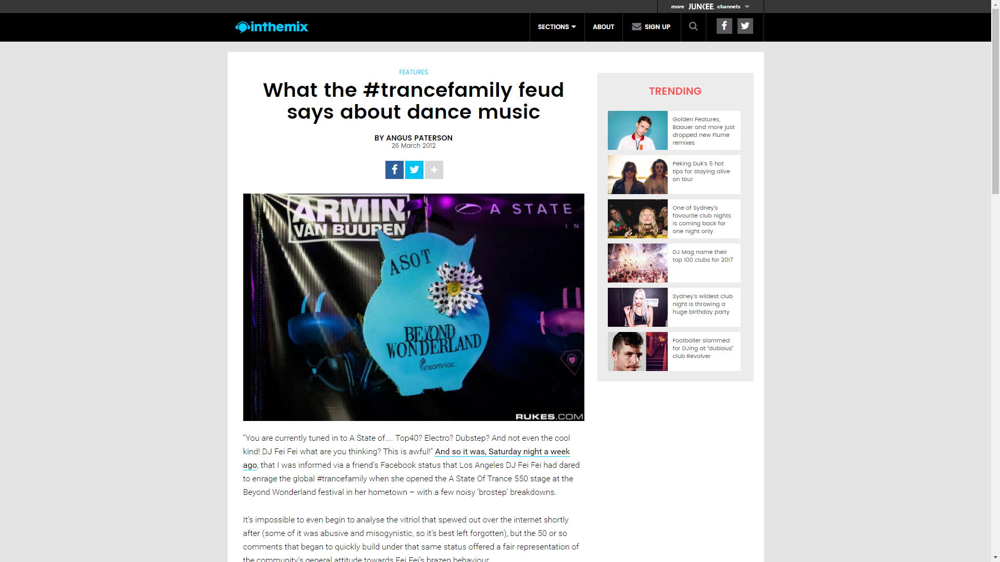

What the #trancefamily Feud Says About Dance Music
{kind=link}

“You are currently tuned in to A State of… Top40? Electro? Dubstep? And not even the cool kind! DJ Fei Fei what are you thinking? This is awful!” And so it was, Saturday night a week ago, that I was informed via a friend’s Facebook status that Los Angeles DJ Fei Fei had dared to enrage the global #trancefamily when she opened the A State Of Trance 550 stage at the Beyond Wonderland festival in her hometown – with a few noisy ‘brostep’ breakdowns.
It’s impossible to even begin to analyse the vitriol that spewed out over the internet shortly after (some of it was abusive and misogynistic, so it’s best left forgotten), but the 50 or so comments that began to quickly build under that same status offered a fair representation of the community’s general attitude towards Fei Fei’s brazen behaviour.
“Genocide … thanks Fei Fei,” said one sullen poster. “A state of rubbish. I’ll choon back in later when there’s trance on,” was another poster’s disbelief that such an institution could be sullied by a different genre. “When we expect to listen to trance and get given a dubstep set… it’s our god damn right as fans.” It’s our goddamn right! Just imagine the look of self-righteous indignation as that one was typed out on the keyboard.
Never mind the fact the event was part of a multi-stage festival that began in the afternoon, or that Fei Fei was an LA local who’d likely have a fair idea of what would work in her city. Then there’s the fact the music played at the ASOT550 parties could be accused of being embarrassingly commercial at times, or that Fei Fei’s selections were still brimming with bubbling melodies and trancey riffs, and arguably weren’t even that out of key in the first place (albeit with a few additional ‘wubb wubbs’).
Perhaps the reaction was predictable, though; the ASOT listeners inclined to use the infamous #trancefamily Twitter hashtag have become notorious for their distrust of anyone seeking to shift the sonic boundaries a little. Arty and Mat Zo were greeted with accusing jeers of “trouse” when they released their genre-bending single Mozart this year, while the UK’s Gareth Emery (who was sharing the stage last Saturday) has called fans out on their musical intolerance on more than one occasion, “striking out at the “pathetic purists who took offence to the occasional dubstep breakdown in his radio show.
“Dance music genres are not in competition, we are in this scene together,” Emery insisted fruitlessly, to a crowd who weren’t really listening. “If all you want to listen to is 100% trance there are plenty of shows doing that so go listen to them. Sorry to rant but this close minded bullshit really fucks me off.”
Enduring scene leader Ferry Corsten had a few similar words to say to inthemix last year after experiencing a stinging critical reaction to his new ‘trouse’ influenced single Check It Out.
“In dance music, the boundaries are disappearing,” he said. “There are still a lot of people left with a very narrow-minded view, and I was getting frustrated with all the idiots out there with so much to say about something that’s a bit out of the box. If we all start listening to people like that, then dance music will die…There’s so much more interesting music than just trance.”
As a long-term trance fan who’s listened the mid ‘90s, I hung my head in embarrassment at the #trancefamily fallout. However, I was reminded shortly after it’s hardly a phenomenon that’s unique to the trance scene. The coverage of the debacle was of course the perfect opportunity for trance itself to cop a flogging, as the resident whipping boy of the electronic music.
“Rubbish belongs in the rubbish bin, so surely brostep belongs at a trance event,” read one comment, with another antagonistically suggesting, “It’s not like the music the other artists on the lineup played would have been any better.” You could hardly argue with the claim that “Trance is an idiot,” so perhaps a bit of counter online abuse was well deserved in this instance. However, consider for a second the uproar if uplifting trance specialists Aly & Filahad been booked to warm up for Sven Vath. The outrage would have been identical.
A dance event definitely needs to be carefully curated with artists who compliment each other; however, the observation to be drawn for wider dance culture is that all these different scenes are so fractured and splintered into their own little corners, there’s little room for solidarity, tolerance or mutual respect. They have so much in common, yet they each sit in their own cordoned-off patch of grass, every last one believing they possess the highest level of righteous underground appeal, that they deserve the most support from punters at their parties, and are entitled to the loudest voice in the dance music media.
Techno thinks trance is shit, trance thinks techno is boring, the underground bass scene has a seething contempt for brostep that borders on the pathological, and meanwhile, brostep thinks “true dubstep” is “thoroughly uninteresting”. Further to those controversial comments from up-and-comer Porter Robinson, each respective scene is often split into countless sub scenes, all riled up about the other.
Each style of electronic music has its own respective strengths. You can point to the techno scene as one that’s defined arguably more than any other by a militant dedication to creative integrity, meaning it’s been a consistent source of inspiration since the very beginning. However, this has often manifested in endless circular conversations about ‘authenticity’, as well as an undercurrent of scorn for anyone who dares produce music outside of their lofty artistic boundaries. Consider Dave Clarke’s hilarious and unforgettable dig at the trance scene. “I think all trance DJs deep down are embarrassed by what they play. They take it on the chin! They know deep down that they’re playing watered-down techno.”
The underground bass scene rightfully earned itself the reputation as one of the truly pioneering branches of electronic music, particularly following dubstep’s glorious rise to mass popularity after the release of Caspa & Rusko’s milestone 2007 FabricLive installment; funnily enough, the scene has probably poured even more energy into hating on the genre’s offshoots that developed via dreaded Skrillex and his cohorts. Electronic soul expert James Blakecaptured the wider attitudes when chatting to The Boston Phoenix last year.
“I think the dubstep that has come over to the US, and certain producers – who I can’t even be bothered naming – have definitely hit upon a sort of frat-boy market where there’s this macho-ism being reflected in the sounds and the way the music makes you feel,” Blake said. “And to me, that is a million miles away from where dubstep started. It’s a million miles away from the ethos of it. It’s been influenced so much by electro and rave, into who can make the dirtiest, filthiest bass sound, almost like a pissing competition, and that’s not really necessary.”
Contrastingly though, there’s dubstep veterans like Skream (arguably much more qualified to be speaking on the topic) who dismiss notions that upstarts like Skrillex have annihilated the sound. “Honestly, it’s pathetic, I think, it’s ridiculous,” he told UK website The Quietus last year. “Either listen to it or don’t listen to it. There’s still nights playing the stuff those people want to hear. It’s just bitchiness, it really is. You haven’t got to like his music, you don’t particularly have to like him, but there’s no reason you can’t like what he’s done – he’s smashed it. He’s up for five Grammys. He must be doing something right, you know what I mean?”
Traditionally, underground dance has shown a fiery distrust of anyone who’s dared “jump on the bandwagon”. Deep Dish defector Dubfire’s choice to steer his sound down a more techno-influenced path was validated by plenty of heavy-hitters in the scene, yet his approach still proved divisive. These notions of ‘authenticity’ and ‘credibility’ were something US producer Diplo tackled last year following the release of a dubstep compilation on his Mad Decent label.
“I think a lot people just hate because they want to have control over things… people hate it because they want that scene for themselves… Dubstep is bigger than just these nerdy white dudes sitting at home in Liverpool talking about how the wobbles used to be bigger in 2009.
“This is about dudes making music all over the world. For me, the dubstep scene is a real motivator and inspiration. Whenever I go to any of the dubstep parties in LA the kids are going so crazy, it’s so cool. Same with the Mexican kids in San Diego and the guys in Brazil.”
Looking beyond all these cross-scene rivalries, it seems there’s one thing that all the different dance enthusiasts can agree on. You know all that commercial dance-pop that’s been blowing up in the USA recently? They hate it. Ever since David Guetta and Black Eyed Peas announced I Gotta Feeling, many would have you believe we’ve entered dark days for dance music.
It’s true that the arrival of a new, fresh-faced crowd usually results in unfortunate amounts of watered-down product, but this is nothing new – have a look back to the ridiculous amount of generic trance that flooded the scene after it peaked in 1999, or the endless waves of flat funky house that followed a few years later, the over-abundance of ‘not proper electro’ we suffered later in the decade, or the soulless minimal and tech-house that’s threatened to swamp the quality product at times.
However, it’s hard not to cringe at the huge flood of cheesy mainstream dance that’s greeted mainstream America’s long-overdue embrace of electronic music; and for many, big dumb dance music is something worth getting really, really upset about. There used to be a tangible link between underground dance and what was being played at the festival mainstages, but a yawing chasm has since opened up that’s beginning to look like the Grand Canyon.
German mainstay Paul van Dyk argues the link has vanished. “It’s a very thin line between an electronic track, with a let’s say ‘poppy element’ to it that’s accessible, versus a cheesy pop track with a danceable element that doesn’t have any relation to what’s happening in the clubs,” he told inthemix. “These days we see a lot of cheesy pop music that’s danceable and because it’s the trendy thing to say, they say it’s now ‘electronic dance music’ – but with all respect, I don’t consider Black Eyed Peas electronic dance music. It’s cheesy pop.”
These comments are restrained, though, compared to the ire that’s been raised in other corners of the dance scene. Steve Lawler was particularly incensed when Simon Cowell announced his frightening DJ X Factor concept in January, and late last year he took aim at American dance culture in an interview with the Miami New Times blog.
“Just because they’re both electronic produced tracks does not mean they should exist in the same scene. This electro-pop-dance that all the R&B artists are jumping on is the worst music I have ever heard in my whole life – cheap, no soul, no meaning. [It’s] only made to make money. I don’t even like calling what we do dance music, because some people think it’s a part of that.”
However, the more measured sentiments of San Francisco local and Dirtybird head honcho Claude VonStroke are perhaps more revealing. He’s a DJ who has also been in the trenches, playing at the growing wave of massive festivals across the US like Electric Daisy Carnival and Electric Zoo. He notes the parties are catering mostly to punters who haven’t even reached legal drinking age yet. “That’s why the festival promoters here are loving it. You get a bunch of kids who can’t do anything – then two times a summer they can go to this place where there are 80,000 people. Which means that it’s all, like, Skrillex – full-on, over-the-top bananas music.”
The argument goes that this ‘bananas music’ serves as the gateway to excellent underground dance. “We have a philosophy that if you listen to Deadmau5 when you’re 18, by the time you can get into a bar you’re on to Dirtybird.”
For mine, it’s a sign that America has arrived, after resisting the thrills of dance music for such a long time (beyond a few small thriving pockets). It’s a country that en-masse likes things big, verbose and over-the-top; so it’s no surprise that players like Tiesto or Guetta had to really embrace their silly side to make an impact and drag EDM into the mainstream. Detroit might have given birth to techno, but American EDM is like a Space Odyssey Star Child that’s been reborn as an infant.
Ultimately, getting upset by the circus clowns of EDM is a waste of time, as the demand will always exist for a less abrasive variation of the music we love. Equally, there is much room for dance culture to collectively loosen up and open its mind a little. I’ve always found the amount of ill-informed vitriol and hate that each respective scene slings at each other frustrating; occasionally it’s well deserved, but more often than not it’s the result of blinkered attitudes, a lack of perspective, an insular idea of what constitutes “good music”, and worst of all, people shutting themselves off to the full spectrum of amazing electronic music.
From my own perspective, I try and embrace nearly everything dance culture has to offer, and avoid stacking subcultures against each other; from techno to trance to house to disco to bass music, downtempo and experimental; you can only ever hope to scratch the surface of the ridiculous amount of new music that’s released every week. And while the commercial end of the spectrum has pushed the limits of my tolerance the past few years, even big players like Avicii occasionally drop an anthem harking back to the irresistible charms of all the crossover hits we’ve enjoyed in the past 20 years. Dance music has always been co-opted, reappropriated and reshaped into a more accessible format; and this music then becomes valid in its own right. Why should this take anything away from the strengths of the underground?
If I think back to my pivotal dancefloor moments in recent years; SBTRKT blowing minds at the open-air Musica party at Sydney’s Darling Harbour last year, Joris Voorn on the high seas at the Spice Afloat cruise, or globally, Paul van Dyk tearing the roof off at Trance Energy in Holland, and Marcel Dettmann greeting the infamous post-9am crowd at the Berlin techno temple of Berghain on a Sunday morning. All of these experiences stand on their own as exhilarating examples of the best that electronic dance music has to offer; why would you choose one over the other? I’ll take them all, thanks.
Article photo by Rukes, at Beyond Wonderland.